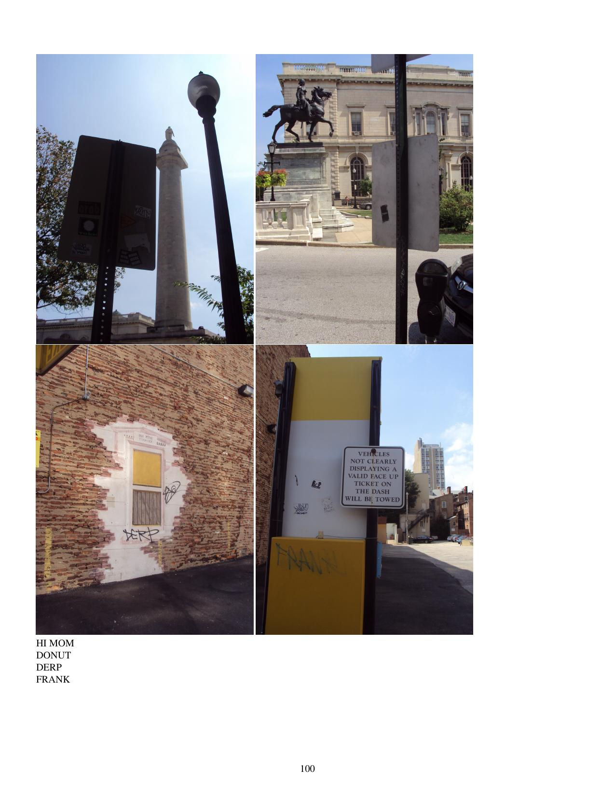

Come, some of the work gets kinda hard
This ain't no place to be if you planned on bein' a star
Let me tell you it's always cool
And the boss don't mind sometimes if you act the fool
At the car wash
Whoa whoa whoa whoa
Talkin' about the car wash, girl
Come on, ya'all and sing it for me
-Rose Royce
North Calvert Moai revisited. Ottobar. Charles Village. Fishglue and MTN and Donut. Lunch specials. Mosaics. Graffiti cover-ups. Bridge scenes. Panhandler countermeasures. A clean bench. Stencils and balloons. Rape apologists are put on notice. More pop-up car wash signs.
Includes:
Random sample page:
